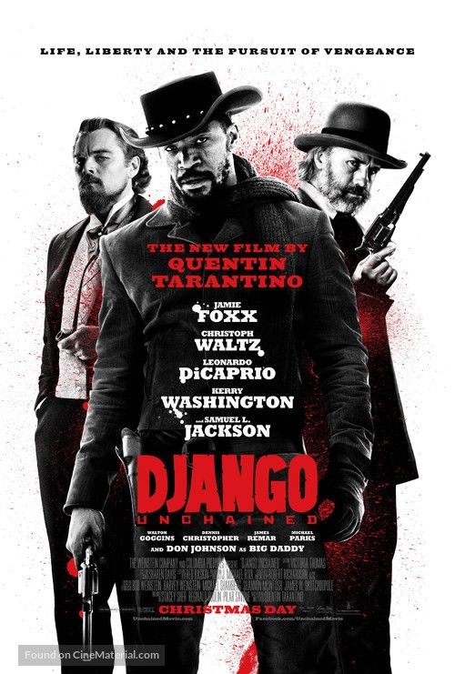

|  | Django Livre
Direção: Quentin Tarantino
Roteiro Quentin Tarantino
Elenco: Jamie Foxx, Christoph Waltz, Leonardo DiCaprio
Django é um escravo liberto que, sob a tutela de um caçador de recompensas alemão, torna-se um mercenário perigoso. Depois de auxiliar seu mentor em alguns trabalhos por dinheiro, os dois partem para uma missão pessoal: encontrar e libertar a esposa de Django das garras de um fazendeiro inescrupuloso. |
|
Acesse mais em YouTube SESSÕES
|